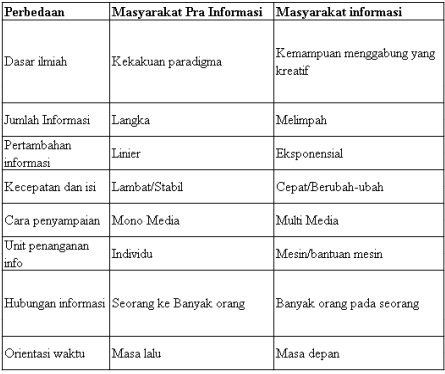
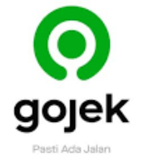

CIRI-CIRI MASYARAKAT DENGAN TEKNOLOGI INFORMASI MODERN
Pada pertengahan abad 20, kata informasi diadopsi sebagai istilah teknis (terutama sebagai teori informasi) dalam perhitungan keandalan insinyur dalam telepon dan sistem pensinyalan serupa. Penggunaan ini menghubungkan kata informasi dengan serangkaian perkembangan dalam logika, probabilitas, dan perhitungan yang terbukti sangat subur di beberapa bidang penting, terutama kriptanalisis, teknik elektro, dan termodinamika.
Sangat tidak tepat jika kita beranggapan bahwa masyarakat informasi lebih istimewa atau luar biasa dibandingkan dengan masyarakat pra informasi. Perlu diketahui bahwa masyarakat pra informasi dapat mengembangkan karakter kolektifnya dengan cara melakukan kegiatan bersama dan berkomunikasi. Salah apabila kita beranggapan bahwa orang-orang abad pertengahan kurang banyak bicara dari pada orang modern.
1. Perbedaan Masyarakat Informasi dan Pra Informasi
Penggunaan internet pada masyarakat era informasi memiliki efekindependen dibandingkan masyarakat pra informasi pada pola penggunaan, termasuk hiburan, pencarian informasi, dan produksi konten, bahkan ketika mengendalikan variabel demografis utama. Setiap pola penggunaan memiliki beberapa hubungan langsung dengan variabel latar belakang ini. Pengguna yang lebih muda, pria, mereka yang menikah, dan pengguna dengan pendidikan tinggi lebih cenderung menggunakan internet untuk hiburan. Mereka yang lebih muda, laki-laki, bekerja, dan memiliki tingkat Bahkan ketika mengendalikan semua faktor ini terkait dengan menjadi masyarakat era informasi, masih ada hubungan independen antara menjadi masyarakat era informasi dan pola penggunaan. Masyarakat era informasi lebih cenderung menggunakan internet lebih intensif untuk membuat konten, menghibur dan menginformasikan diri mereka sendiri, daripada masyarakat pra informasi. Teknologi ini mengkonfigurasi ulang akses.
Ada yang disebut sebagai kelompok masyarakat pra informasi, mereka adalah masyarakat yang tidak atau belum menjadikan suatu informasi sebagai sumber utama. Biasanya mereka tidak melihat pengaruh menonjol suatu informasi dalam kehidupan mereka. Dan cara mereka mendapatkan informasi biasanya belum menggunakan teknologi, alias mereka masih menggunakan cara tradisional.
Berikut merupakan tabel perbedaan masyarakat informasi dengan masyarakat prainformasi

2. Ciri - Ciri Masyarakat Informasi
Adapun ciri-ciri masyarakat informasi adalah sebagai berikut:
a. Menjadikan internet sebagai infrastruktur kehidupan sehari-hari
Masyarakat berusaha untuk terhubung dengan internet agar masyarakat bisa mengakses suatu informasi. Informasi yang diakses tersebut merupakan informasi yang bersifat penting terhadap usaha serta pekerjaan.
b. Informasi menjadi sumber utama dalam dunia usaha
Masyarakat menggunakan informasi untuk memperoleh keuntungan disuatu bidang usaha tertentu. Misalnya informasi nilai saham yang sangat berguna bagi pelaku bisnis saham.
c. Informasi menjadi aset bagi siapa saja
Informasi yang tersebar ditengah masyarakat dapat digunakan oleh siapa saja untuk kepentingan pribadi maupun kelompok selama informasi tersebut benar-benar dibutuhkan.
d. Terdapat sistem pelayanan online
Terdapat banyak sistem pelayanan diberbagai aspek kehidupan yang bersifat online. Masyarakat lebih memilih suatu pelayanan yang bersifat online karena hal tersebut dapat menghemat waktu dan biaya.
e. Adanya persaingan yang ketat dan bersifat global
Persaingan terjadi karena masyarakat masing-masing berusaha untuk memperoleh suatu keuntungan dari sebuah informasi yang sama. Persaingan tersebut bisa bersifat global apabila suatu informasi memiliki pengaruh terhadap masyarakat global.
f. Proses pertukaran informasi yang sangat cepat
Proses pertukaran informasi ditengah masyarakat berlangsung intens dan cepat, hal ini dipengaruhi oleh masyarakat yang saling membutuhkan informasi dan juga didukung oleh perkembangan teknologi.
g. Menjadikan informasi sebagai pendongkrak berkembangnya usaha
Informasi digunakan sebagai sarana untuk mempromosikan suatu usaha kepada masyarakat umum yang lebih luas melalui internet.
h. Menggunakan informasi sebagai pertimbangan untuk mengambil suatu keputusan.
Masyarakat menggunakan informasi yang sedang berkembang untuk memprediksi sesuatu sehingga masyarakat benar-benar yakin pada proses pengambilan sebuah keputusan.
i. Terjadinya komunikasi hampir secara instan melintasi jarak yang begitu jauh.
Jarak dan waktu bukan lagi menjadi penghalang dalam urusan komunikasi dan mendapatkan informasi.
j. Cepatnya proses penyerapan informasi
Masyarakat peka terhadap informasi yang beredar sehingga penyerapan informasi berlangsung cepat.
k. Menjadikan informasi sebagai salah satu komoditi ekonomi yang memiliki harga
Pelaku media online menjadikan informasi sebagai suatu hal yang memiliki nilai jual.
l. Tingginya nilai ketergantungan terhadap informasi
Dalam melaksanakan aktifitas maupun untuk mengambil keputusan, masyarakat membutuhkan informasi-informasi terkait mengenai aktifitas atau suatu keputusan.
m. Tingginya tingkat responsibilitas terhadap informasi
Masyarakat peka terhadap suatu informasi yang beredar. Terlebih terhadap informasi yang mempunyai pengaruh terhadap masyarakat tersebut.
n. Pola hidup atau kehidupan sosial bisa dipengaruhi oleh informasi
Pola hidup masyarakat bisa berubah oleh pengaruh informasi yang ada atau informasi yang diterima. Tanggapan terhadap suatu informasi bagi masing-masing masyarakat berbeda-beda sehingga efek suatu informasi terhadap masyarakat juga berbeda-beda.
o. Masyarakat cenderung bersifat lebih demokratis
Mudahnya masyarakat mengakses dan mendistribusi informasi membuat masyarakat bersifat lebih demokratis dari sebelumnya. Hal ini terjadi karena masyarakat dapat menyampaikan pendapat serta kritikan langsung melalui media online.
p. Cara mengakses informasi berubah dari media cetak ke media online
Masyarakat.informasi mengakses informasi secara online. Hal ini dipengaruhi oleh proses akses informasi yang sangat cepat serta sifat informasi yang up-to-date. Sehingga minat masyarakat terhadap media cetak mulai menurun.
Adapun informasi yang selalu dan yang akan digunakan oleh masyarakat informasi harus memiliki nilai yang bermanfaat bagi penggunanya baik dalam pengambilan keputusaan saat ini maupun yang akan datang. Berikut merupakan sifat-sifat informasi :
a. Faktual atau fakta, sifat informasi yang ini kebenarannya dapat dipercaya, karena informasi yang bersifat fakta memiliki bukti atau rekam jejak atas pengumpulan datanya dan pengolahan datanya. Sebagai contoh yaitu skripsi, gambar, karya tulis ilmiah dan sebagainya.
b. Terupdate, sudah seharusnya masyarakat informasi mendapatkan suatu infromasi berdasarkan kejadian terkini. Hal ini dapat menghindari informasi bagi masyarakat yang tidak mengakses sebuah informasi terbaru. Bagi pemberi informasi juga harus benar-benar memberikan sebuah informasi yang bersifat update.
c. Penambah ilmu pengetahuan, informasi yang ada harus benar-benar memberikan tambahan pengetahuan bagi masyarakat pengguna informasi.
d. Korektif, sebuah informasi seharusnya dapat dijadikan sebagai salah satu sumber rujukan bilamana masyarakat sangat membutuhkan informasi untuk bahan referensi.
3. Pengaruh Informasi Terhadap Masyarakat
Pada masa globalisasi ini dimana informasi dan sumber informasi sangat banyak, menghadirkan pengaruh besar terhadap aspek kehidupan. Cepatnya laju perkembangan informasi tidak terlepas dari berkembangnya teknologi informasi. Masyarakat dapat mengakses informasi kapan saja dan di mana saja. Mudahnya mengakses informasi juga menimbulkan dampak terhadap masyarakat. Dampak tesebut tergantung dari cara suatu masyarakat merespon informasi itu sendiri.
a. Dampak positif teknologi informasi :
1. Arus informasi sangat cepat sehingga masyarakat tidak ketinggalan informasi.
2. Masyarakat dengan mudah mengakses informasi kapanpun mereka mau.
3. Wawasan masyarakat terhadap perkembangan dunia semakin luas karena informasi-informasi yang mudah diakses.
4. Mempermudah pelaku bisnis untuk berbisnis secara online.
5. Mempermudah masyarakat untuk berkomunikasi tanpa harus bertemu.
6. Dapat digunakan sebagai sarana mencari informasi untuk bidang pendidikan dan kebudayaan.
7. Sebagai sarana hiburan.
8. Dengan berkembangnya teknologi informasi dan teknologi komunikasimasyarakat lebih mudah beraktifitas.
9. Wawasan masyarakat mengenai perkembangan teknologi makin luas.
10. Terbukanya peluang usaha yang memanfaatkan jaringan internet.
11. Memberikan ruang untuk berkreasi bagi masyarakat.
b. Dampak negatif teknologi informasi :
1. Berkurangnya proses sosialisasi secara nyata.
2. Kejahatan dunia maya meningkat.
3. Konten negatif yang berkembang dengan pesat.
4. Meningkatnya oknum yang memfitnah dan juga pencemaran nama baik.
5. Kecanduan terhadap internet bisa menyebabkan masyarakat tidak produktif.
6. Berkurangnya pola interaksi dengan orang sekitar.
7. Terjadinya pelanggaran privasi.
8. Sifat plagiat makin bertambah.
9. Pembajakan hak cipta suatu karya.
10. Perjudian online meningkat.
11. Meningkatnya aksi pornografi.
4. Penggunaan Teknologi Informasi Di Masyarakat
Didukung dengan teknologi modern membawa banyak keuntungan positif terhadap bidang aspek kehidupan masayarakat.
a. Bidang Perbankan

Proses transaksi perbankan bisa dilakukan secara online oleh nasabah bank, baik melalu mesin ATM, komputer maupun telpon genggam. Pihak bank juga bisa mengolah data perbankan dengan mudah dan proses yang cepat karena adanya sarana komputer.
b. Bidang Perdagangan

Pelaku dagang bisa berdagang secara online. Selain itu dengan adanya teknologi yang mendukung sekarang ini, semua pengolahan informasi perdagangan baik proses transaksi, informasi barang dagangan serta informasi lain yang berkaitan dengan perdagangan bisa dilakukan secara online menggunakan komputer. Sebagai contoh adalah dengan adanya aplikasi bukalapak.
c. Bidang Perindustrian
Manfaat teknologi informasi di bidang perindustrian yaitu penggunaan komputer untuk membantu melakukan pengolahan data.
d. Bidang Transportasi

Dengan adanya kemajuan teknologi, aspek kehidupan bidang transpotasi banyak berkembang. Mulai dari transportasi kelas bawah seperti ojek online hingga sistem pembelian tiket pesawat terbang yang menggunakan aplikasi online. Contohnya adalah aplikasi Gojek dan tiket.com.
e. Bidang Kesehatan
Membantu rumah sakit untuk membangun sistem informasi yang mana bisa membagikan informasi kesehatan dengan rumah sakit lainnya.
f. Bidang Pendidikan

Salah satu cara dari instansi pendidikan untuk mendukung kegiatan belajar mengajar, selain metode tatap muka juga menggunakan metode online. Misalnya penggunaan sistem e-learning. Pada sistem ini, pengajar ataudosen membagikan materi secara online dan bisa diakses online juga oleh pelajar. Contohnya aplikasi kelaskita.com.
g. Bidang Seni

Pada komputer terdapat aplikasi untuk mengedit foto maupun video. Dengan menggunakan komputer foto atau video yang biasa-biasa saja bisa diedit menjadi foto atau video yang lebih menarik dibanding dengan aslinya. Selain itu kegunaan komputer di bidang seni juga adalah alat musik yang meniru nada-nada dari alat musik asli yang disebut.
h. Bidang Komunikasi
Sebelum teknologi berkembang, proses komunikasi harus dilakukan dengan cara bertatap muka dan hanya bisa dilakukan apabila lawan bicara berada di tempat yang sama dengan pembicara. Beda halnya pada saat ini, peralatan telekomunikasi seperti telepon genggam sudah banyak dimiliki oleh masyarakat. Komunikasi bisa dilakukan dengan lawan bicara dimanapun berada. Komunikasi tidak dibatasi oleh jarak dan waktu.
i. Bidang Pertahanan dan Keamanan
Komputer digunaan untuk mengendalikan sistem pertahanan. Komputer juga bisa digunakan untuk mengendalikan senjata. Selain itu pada bidang pertahana dan keamanan komputer bisa dijadikan sarana untuk melatih kemampuan tempur prajurit melalui simulasi pada komputer.
金村美玖

かねむら みく
Saitama, September 10 2002
On August 15th, passed the auditions to become a member of Hiragana Keyakizaka46's 2nd Generation.